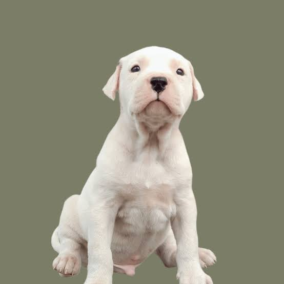
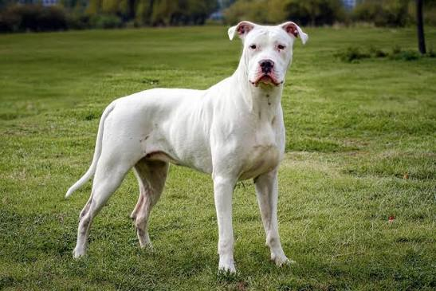

El Dogo Argentino es una raza de perro originaria de Argentina, creada en la provincia de Córdoba por los hermanos Antonio y Agustín Nores Martínez. Su desarrollo comenzó a principios del siglo XX, buscando obtener un perro fuerte, resistente y capaz de participar en la caza mayor. Es un perro de gran tamaño, musculoso y atlético. Su característica más reconocible es su pelaje completamente blanco, aunque puede presentar una pequeña mancha oscura en la cabeza. Tiene el pelo corto y fácil de mantener. Se caracteriza por ser un perro valiente, inteligente, resistente y muy activo. Necesita realizar ejercicio y recibir una buena educación desde temprana edad. A pesar de su apariencia fuerte, puede ser afectuoso y cercano con su familia cuando recibe una socialización adecuada. Originalmente fue desarrollado para la caza mayor, especialmente de animales como jabalíes y pumas. También puede desempeñarse como perro de trabajo, guardia y compañía. Esperanza de vida: aproximadamente 10-12 años.
